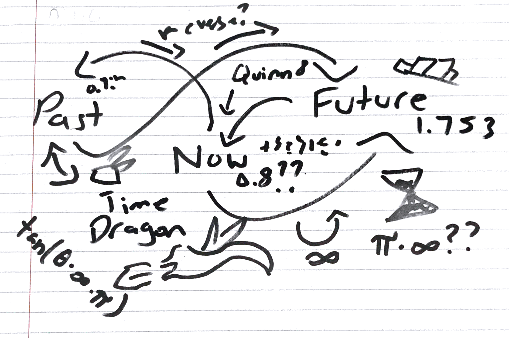

Meeting Minutes for Magic Corp's Time Travel Machine
Meeting 1
Topic - Brainstorming
Date: Monday, October 1, 2029
Attendees:
- Quinn Stevenson - Team Leader (she/her)
- Alex Climber (he/him)
- Tessa Smith (she/they)
- Gilles Murillo (he/him)
- Kai Kurusu (they/them)
Agenda:
Unfinished Business from Previous Meetings
- None - First Meeting
New Business
- Introductions and Ice Breakers
- Assigning Roles
- Design for Time Machine
- Potential Fuel Sources
- Safety Risks
- Scheduling Next Meeting
Questions/Comments/Concerns:
- How to ensure we don't meet past/future selves?
- Will this increase time particle pollution?
- How to avoid the time dragons?
Diagrams/Pictures:
Video of Meeting:
Video Transcript
Quinn: Alright, so here's what we will be doing in this meeting...
Audio of Meeting:
Off Topic:
Meeting 3
Topic - Starting Production of Machine
Date: Thursday, October 18, 2029
Attendees:
- Quinn Stevenson - Team Leader (she/her)
- Alex Climber (he/him)
- Tessa Smith (she/they)
- Gilles Murillo (he/him)
- Kai Kurusu (they/them)
Agenda:
Unfinished Business from Previous Meetings
- Design for Time Machine
- Safety Risks
New Business
- Snacks
- Finding Manufacturers
- Patenting?
- Boosting Morale
Questions/Comments/Concerns:
- Butterfly effect?
- Tessa Smith seems to be a wild card.
- How to avoid the time dragons?
Diagrams/Pictures:
Video of Meeting:
Video Transcript
Video Data Cannot be Recovered
Audio of Meeting:
Off Topic:
Meeting 17
Topic - Testing Machine
Date: Tuesday, June 11, 2030
Date: Saturday, April 24, 1954
Date: Friday, January 20, 2034
Attendees:
- Quinn Stevenson - Team Leader (she/her)
- Alex Climber (he/him)
- Tessa Smith (she/they)
Gilles Murillo (he/him)(deceased)- Kai Kurusu (they/them)
- Kai Kurusu (from 2034) (they/them)
Agenda:
Unfinished Business from Previous Meetings
- None
New Business
- TEST MACHINE!!
Questions/Comments/Concerns:
- Gilles Murillo was an unfortunate casualty to time dragons.
- UNFORTUNATE CASUALTY!!???
- Future Kai Kurusu and Tessa both have some concerns.
Diagrams/Pictures:
Video of Meeting:
Video Transcript
Video Data Cannot be Recovered
Audio of Meeting:
Off Topic:
- Accidentally showed a meme to someone in 1954